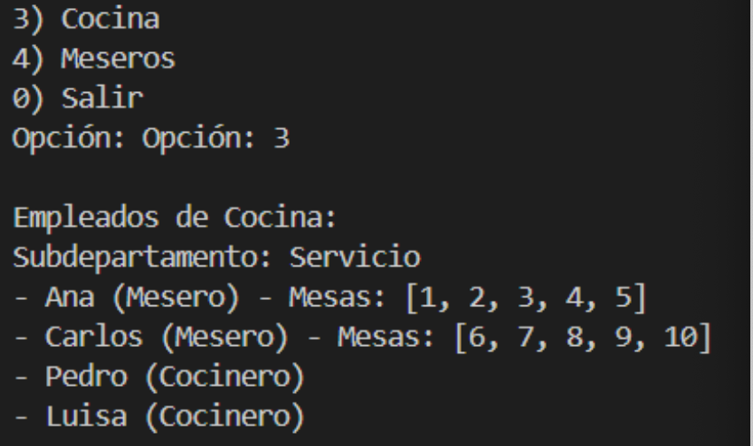
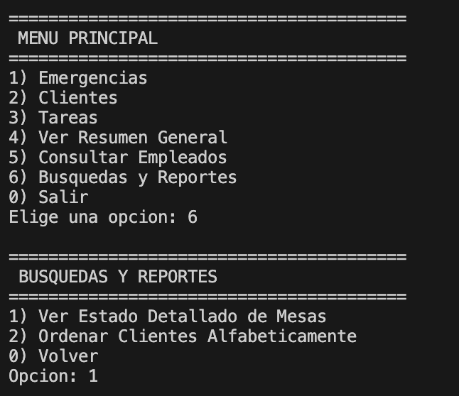

Manual Proyecto MYXER
Menú Principal
Primero se muestra el sistema de gestion y te las opciones que puedes hacer dentro de este código
Si das enter podrás ver el menú principal donde podrás ver las emergencias, atender clientes, gestionar las tareas, ver todo, los empleados y salir

Menú de Emergencias
Si introduces "1" podrás ver el primer menú de emergencias y si nuevamente introduces la opción 1 podrás agregar una nueva emergencia

Después si introduces la opción "2" podrás atender la emergencia que está en el tope y como en este caso solo hay una emergencia pues se atiende esa

Si introduces la opción 4 podrás ver la emergencia del tope que en este caso solo es "comida urgente"

Si introduces la opción 5 podrás ver la lista de emergencias como a continuación se muestra

Después si introduces la opción "0" podrás volver al menú principal

Menú de Clientes
Si introduces la opción "2" podrás ver el menú de clientes y si introduces la opción "1" podrás agregar un nuevo cliente

Despues de agregar el cliente nos preguntara que quiere este como se muestra a continuacion
Al agregar algo el programa nos dara la descripcion del platillo y si queremos confirmar la selccion y si la agregamos entonces el se mostrara el precio y el tiempo estimado de preparacion
En el menu de clientes si introducimos la opcion "2" podremos atender al cliente y los detalles de este
Atender al cliente en la opcion de lista (opcion 3 del menu de clientes)

Si introducimos la opcion "4" podremos ver la lista de clientes que hay en espera
Si introducimos la opcion 0 volveremos al menu principal

Menú de Tareas
Si introducimos la opcion 3 del menu principal entraremos al menu de tareas y si introducimos la opcion 1 podremos agregar una nueva tarea

Despues de agregar la tarea nos mostrara la tarea que se agrego

Si introduces la opcion 2 eliminaras las tareas
Si introduces la opcion 3 podras buscar la tarea por texto

Si introduces la opcion 4 podras ver todas las tareas en lista

Si introduces la opcion 0 volveras al menu principal
Opcion 4 del menu "Ver todo"
Si introduces la opcion 4 del menu principal podras ver todas las emergencias, clientes y tareas

Si introduces la opcion 0 volveras al menu principal
Opcion 5 del menu "Empleados"
Si introduces la opcion 5 del menu principal podras ver los empleados
Si introduces la opcion "1" podras ver quien es el CEO

Si introduces la opcion "2" podras ver quienes son los empleados de caja
Si introduces la opcion "3" podras ver quienes son los empleados de cocina
Si introduces la opcion "4" podras ver quienes son los meseros

Si introduces la opcion 0 volveras al menu principal
Busquedas y Reportes
Si introducimos la opcion "6" en el menu principal nos llevara al apartado donde podremos ver el estado detallado de las mesas, ordenar clientes por orden alfabetico y salir al menu central
Si introducimos la opcion 1 podremos ver el estado detallado de las mesas como se ve a continuacion

Si introducimos la opcion 2 podremos ordenar los clientes alfabeticamente
Si introducimos la opcion 0 volveremos al menu principal
Salir
Si introduces la opcion 6 del menu principal podras salir del programa